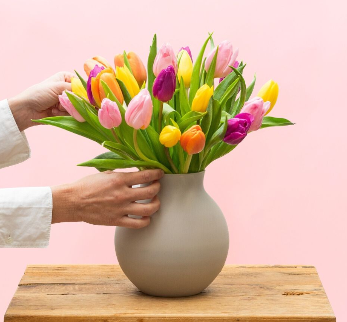
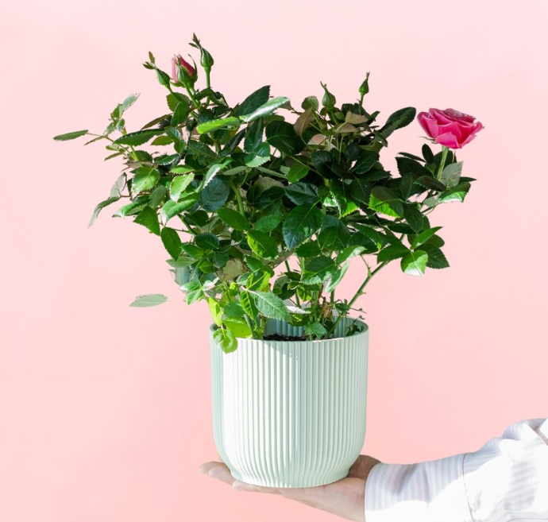
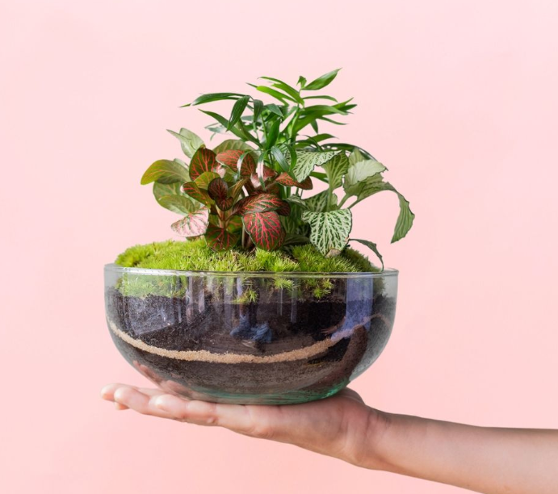
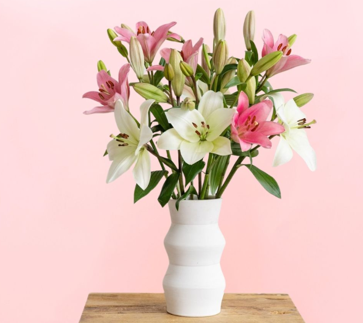
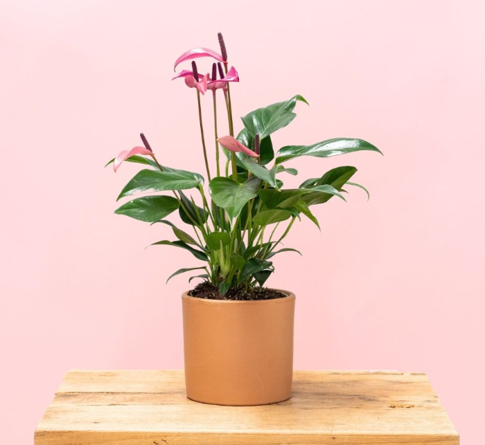

Las orquídeas simbolizan amor y prosperidad porque crecen fácilmente y florecen bajo diversas condiciones, características que cuando se analizan metafóricamente son muy valiosas para cualquier persona. Además, representan belleza y perfección, elementos que no deben faltar en tu hogar o al hacer un regalo.

Ramo de 40 tulipanes de colores
52,99€
Un ramo de tulipanes puede plasmar una amplia variedad de emociones, como la admiración y la pasión, pero también el duelo. Los tulipanes rojos simbolizan el amor verdadero y los amarillos, la alegría.

Rosal Mini Rosa
22,99€
Esta variación de flores es hermosa y tiene un significado particular, las mini rosas simbolizan la dulzura, la delicadeza, alegría, tranquilidad y bondad.

Jardín Eterno La Platgeta
69,99€
Con el Jardín Eterno La Platgeta tendrás un pedazo del trópico en un pequeño terrario. Sus fitonias de colores y su aspa recrean un ecosistema que se autoabastece. Un pequeño oasis tropical en tu casa.

Natalie - Lirios Blancos y Rosados
32,00€
Este ramo de lirios blancos y rosados viene directamente desde los campos de nuestro agricultor en Vilassar de Mar (Barcelona).

Anthurium Lila con Maceta
29,00€
Aquí está el clásico que más está triunfando este año. Su color violeta, la forma de corazón de sus brácteas… lo de este Anturio es una pasada.